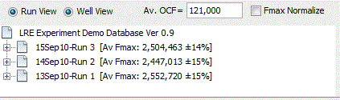

The sorting panel provides two windows that allow profiles that to be ordered by either amplicon or sample:
When either an experiment or calibration database window is selected, these two windows become active. When either of these windows are selected, a list is generated of all the amplicon and samples, contained within the database:
Note that the average Emax is presented in the label, along with the standard deviation. If an amplicon, for example, is selected, a list of all the profiles produced by this amplicon is displayed within the experiment database window:

Experiment Window

In this case this amplicon produced 20 profiles contained within this experiment database. Selection of any of these profiles will trigger the profile editor window to display the profile. Conversely, if a sample is selected in the sample sorting window, all of the profiles generated by that sample will be displayed within the explorer database window, and again selection of any of these profiles will trigger the profile editor window to display the profile.
To return to viewing runs within the experiment database window, click on the run view button:

Calibration profiles within the calibration database can also be viewed in this fashion. That is, when the calibration database window is selected, selecting on either the sorting windows will trigger the calibration profiles contained within the calibration database to be displayed as a list, similar to that for the sample profiles described above.
Note also that both of the sorting windows can be
"slide" into the right hand border by clicking on the
 button located on the top of the each window:
button located on the top of the each window:
This then allows the main window width to be reduced:

The windows can then be opened by hovering the mouse over the corresponding window button, which also allows the window to be locked back into the sorting panel by clicking on the black circle located at the top right of the window.